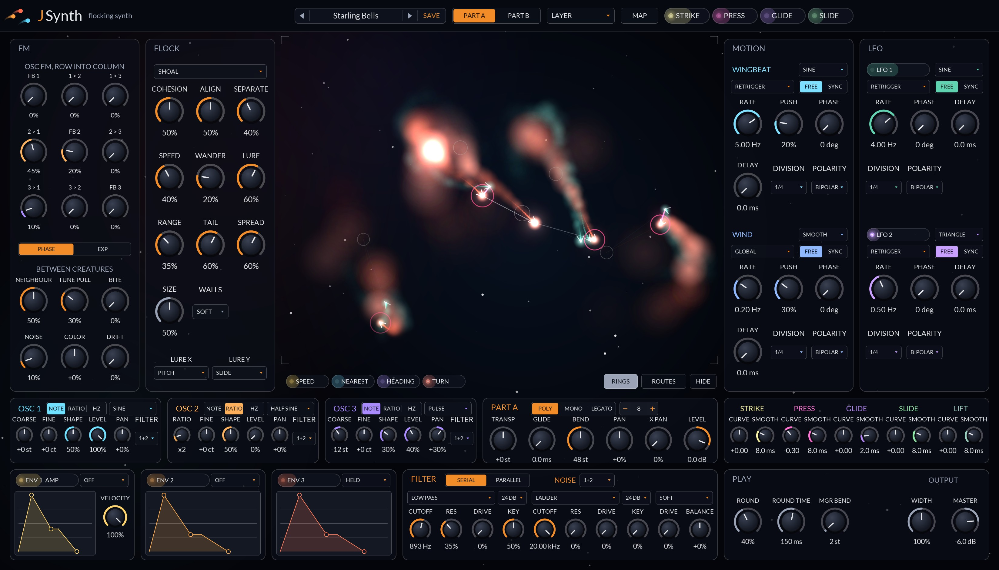
Chapters 2 and 3 get you installed and playing in a few minutes. Chapter 4 tours the panel, and Chapter 5 explains how a note becomes a sound, which is the quickest way to understand what every control does. Chapters 6 to 13 cover the sky, the parts and every panel. Chapter 14 lists the factory presets and Chapter 15 has recipes to start from. The appendix lists every parameter with its exact range and default, plus specifications and troubleshooting.
Throughout the manual, control names are set in bold and panel labels as they appear on screen, such as TUNE PULL. Every control is a host parameter, and every one that moves continuously can be modulated by the host. A tag beside a parameter means:
A two-part MPE synth where every note is a creature, and the creatures flock.
Play a note on JSynth and a creature hatches in the sky in the middle of the panel. Your note is its lure: low notes pull their creatures to the left, high notes to the right, and sliding your finger up an MPE controller lifts it higher. Press harder and the creature flies faster and burns brighter. Let go and it flies off as its sound fades, trailing ink.
While they are held, the creatures do what flocks do. They gather, turn together, keep a little apart, and wander. And because each creature is a voice, how it flies can become how it sounds: how fast it goes, how near its nearest neighbour is, which way it heads and how hard it turns are all modulation sources, as exact as an envelope. Creatures can also hear each other directly. A neighbour's oscillator can frequency-modulate this one, creatures flying the same way drift toward pure intervals, and a hunter that catches its prey rings it.
Underneath is a serious synth. Each of the two parts, A and B, is its own species with its own patch: three oscillators with analog and FM waves, a 3×3 FM grid, noise, drive, two filters, three envelopes, four LFOs, four mod buses and sixty-four routes. Nothing the flock does reaches the sound unless you route it, so a plain patch is plain.
The flock flies on the audio thread, at a fixed rate, inside the synth. What you see in the sky is exactly what the voices hear, and a render plays back the same every time from the same start.
JSynth is a CLAP plug-in. It ships in the JClap bundle alongside the other JClap plug-ins.
| macOS | ~/Library/Audio/Plug-Ins/CLAP |
| Windows | C:\Program Files\Common Files\CLAP |
| Linux | ~/.clap |
The plug-ins are ad-hoc signed but not notarized, so macOS quarantines files downloaded through a web browser and some hosts (Bitwig among them) silently skip them. The simplest install is from Terminal, since files fetched with curl are not flagged:
curl -sL https://github.com/jeffmhopkins/Jclap/releases/latest/download/jclap-macOS.zip -o /tmp/jclap.zip && mkdir -p ~/Library/Audio/Plug-Ins/CLAP && ditto -x -k /tmp/jclap.zip ~/Library/Audio/Plug-Ins/CLAP
If you already downloaded with a browser, clear the flag once after copying:
xattr -dr com.apple.quarantine ~/Library/Audio/Plug-Ins/CLAP/*.clap
JSynth has one note input and three stereo outputs: Main, Part A and Part B. Normally both parts play on Main. Set a part's Output to Own (a host parameter) and it plays on its own port instead, so you can process the two species separately in your host.
Five minutes from an empty instrument slot to a flock you can hear.
Every control has a tooltip. Hover over anything on the panel for a one-line reminder of what it does.
The sound sits down the left in three big panels that draw what they do, the sky fills the right, and the voice and the output sit under it. Everything edits the part you have chosen.
Every knob, switch and menu is a host parameter, so everything can be automated. Knobs work the same everywhere on the panel:
| Action | On a knob |
|---|---|
| Drag up / down | Change the value. A popup shows the value while you drag. |
| Shift + drag | Fine adjustment. |
| Scroll wheel | Step the value up or down. |
| Double-click | Reset to the default value. |
| Right-click | Menu with Reset to default and Enter value… to type an exact number. |
In MAP mode, with a source armed, each knob that source moves draws a route ring in its colour outside its own arc, spanning how far the source moves it. Outside MAP the knobs show no rings; the route list shows every route. In MAP mode, knobs behave differently: see Chapter 13.
Part A is drawn in orange and part B in blue, in the sky and on the panels. Every modulation source has its own colour, the same on its chip, its route rings and in the route list, and MAP and the route list are pink.
The panel is 1648 × 940 at 100%. Right-click any empty part of the sky and choose UI Size to scale it to 75%, 100%, 125%, 150% or 200%; at 75% it fits a 1440 × 900 laptop screen. The size you pick is remembered the next time the editor opens.
A note becomes a voice and a creature at once. The voice makes the sound; the creature flies, and how it flies can shape the sound.
Each voice runs three oscillators, in the order 3, 2, 1, so Osc 3 can modulate Osc 2, and both can modulate Osc 1, within the same sample. The FM grid sets how much each one modulates each other one. The mixer sets each oscillator's level and pan and adds noise. Then comes drive, then two filters, then the amp, whose shape is Env 1, and finally the voice's place in the stereo field. Every voice of a part sums to that part's bus, and the two parts sum to the output.
Envelopes 2 and 3, the LFOs, the touch, the routes and the flock all work at a control rate of one tick every 32 samples (1,500 a second at 48 kHz). Every value the audio reads ramps smoothly across each tick, so nothing zippers, and knobs are smoothed over 10 ms. The amp envelope runs every sample. Because the ticks are counted across the host's blocks, JSynth sounds the same at any buffer size.
As a voice starts, its creature hatches at the note's lure. The flock steps 500 times a second. Each step, every creature feels its neighbours (cohesion, alignment, separation), its lure, its own wander, the wind and its wingbeat, and moves. Then the flock works out each creature's four sources and who can hear whom. Each voice reads its creature's sources smoothly between steps.
A route connects a source to a destination with an amount. Each part has 64 of them. Each tick, every voice works out its routes from its own sources, so the same route can push one note's filter open and leave another's closed: an envelope, a finger's pressure or a creature's speed is always that note's own. A route moves a parameter within its own range, so +100% from a source at full takes any knob from its lowest to its highest.
The voices run at 2× the host's rate by default, which keeps FM and hard waves clean, and are brought back down by a steep, latency-free filter. The Quality parameter (a host setting) chooses 1×, 2× or 4×. 1× saves CPU; 4× is for bright FM at low sample rates.
plugins/jsynth/ARCHITECTURE.md in the source repository walks through every stage with the numbers the code uses.
Both species fly here, all the time. The sky is the synth's own flock, drawn as it is.
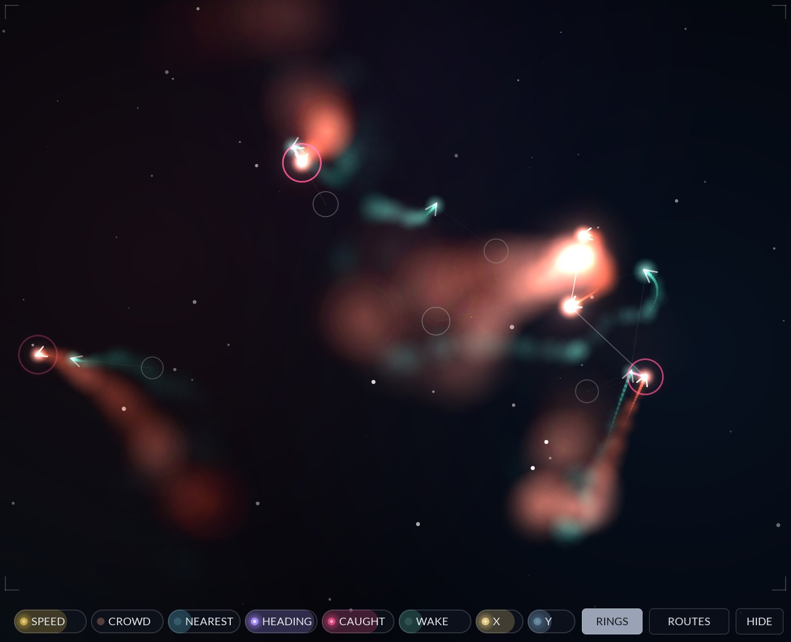
The switch over the sky's top left picks how it is drawn. SUMI is ink in dark water, lit from above; AURORA is a night sky over a glowing horizon. The menu beside it picks a palette: EMBER, BOREALIS, GLACIER, SUNSET, MOONLIGHT, NEON or CLASSIC, each with a set of inks for each part. Each look keeps its own palette (Sumi starts in Ember, Aurora in Borealis), and the look and both palettes are saved with your project. SIZE beside the palette draws the creatures, their strokes and their ink bigger or smaller, from 50% to 300%, and is saved with your project too. They are only drawn and never change the sound.
Click anywhere in the sky to play a note: left to right runs from C2 to C6, and how high you click sets Slide. Drag while holding to bend the note and change Slide; let go to release it. The notes play on whichever parts the play mode sends them to, just like notes from your keyboard.
The row of chips under the sky holds each creature's four sources, and RANDOM, a new value for each note. Each chip's light shows the newest creature of the part you are editing. They are always each note's own when used in a route.
| Source | What it measures |
|---|---|
| SPEED | How fast the creature flies, against the fastest it could at full Press (0 to 100%). |
| NEAREST | How near its nearest neighbour is: 100% is touching, 0 is at the edge of RANGE or beyond. |
| HEADING | How much it flies upward: 100% straight up, 50% level, 0 straight down. Smooth all the way round, so it never jumps. |
| TURN | Which way and how hard it is turning: up to +100% for a hard right turn on screen, down to −100% for a hard left, 0 flying straight. Smoothed over about 170 ms, so the wander's jitter and the wingbeat's bob barely reach it. |
The switch at the top right picks how much of the panel you see. SYNTH, as this manual shows it, puts the sound down the left beside the sky. SKY folds everything away but the switch, the look and the preset bar so the sky fills the panel, which is lovely on a second screen while you play. There those controls fade out after 10 seconds without the mouse moving over the window, and come back as soon as it moves. The view stays as you left it when the editor is closed and opened again.
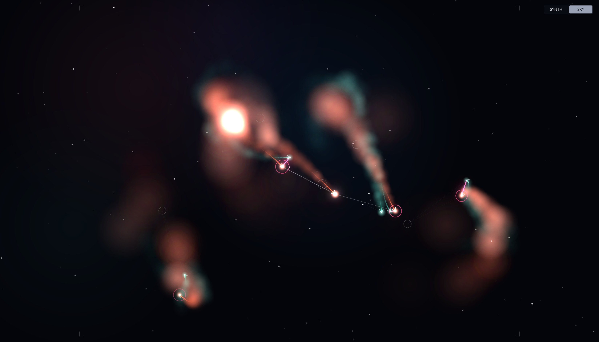
Two species, one keyboard. The header decides which notes go where; the VOICE tab under the sky sets how each part plays them.
Parts A and B are complete, separate patches with the same controls. PART A and PART B in the header choose which one the panels show and edit; the sky always shows both. A new instance starts with A shoaling and B hunting it an octave down, so layering them gives you a predator from the start.
| Mode | Which part plays a note |
|---|---|
| SINGLE | Part A only. The default. |
| LAYER | Both, every note. |
| SPLIT | B below the Split Key (C4 by default), A from it up. |
| MPE ZONES | MPE member channels 2 to 8 play A and 9 to 16 play B. Channel 1 plays both. |
| VELOCITY | B for notes struck at or above the Velocity Split (80), A for softer ones. |
| EXPRESSION | Both, crossfaded per note by Slide or Press (the Crossfade Source): at 0 you hear A, at full you hear B. |
Split Key, Velocity Split and Crossfade Source, and each part's Key Low and Key High range, are host parameters. A note outside a part's key range never plays that part.
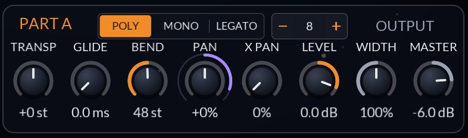
The VOICE tab draws what its knobs set: the stereo field (the part's pan, its X Pan spread, the output's width and where its creatures sit), the voices in use, and at the right the meters. These show the levels of A, B and the whole output as they play, from −60 to +6 dB, glowing brighter the louder they are and red above 0 dB. A white tick on each marks where its LEVEL or MASTER is set. The part you are editing is lit; the other is dimmed.
| Control | Range | Default | What it does |
|---|---|---|---|
| POLY / MONO / LEGATO | Voice mode | Poly | Mono plays one note at a time and restarts it; Legato glides to a new note without restarting while one is held. Both go back to the last note still held when you let go. |
| Voices (− 8 +) | 1 – 16 | 8 | Polyphony: how many notes the part sounds at most. The oldest released note is taken first, then the oldest held, with a 3 ms fade. |
| PAN | ±100% | 0 | The part's pan. ROUTE |
| X PAN | 0 – 100% | 0% | How far each creature's place in the sky, left to right, pans its voice. At 100% a creature at the left edge plays hard left. ROUTE |
| WIDTH | 0 – 200% | 100% | The whole output's stereo width: 0% is mono, past 100% wider. Shared by both parts. |
| GLIDE | 0 ms – 20 s | 0 | Portamento time. ROUTE |
| BEND | 1 – 96 st | 48 st | The MPE bend range: how far a finger slides on a member channel. |
| TRANSP | ±48 st | 0 (B: −12) | Transpose, in semitones. |
| VELOCITY | 0 – 100% | 100% | How much velocity sets the level. At 0 every note plays at full level. |
| LEVEL | −60 – +6 dB | 0 dB | The part's level. ROUTE |
| MASTER | −60 – +6 dB | −6 dB | The whole output's level. Shared by both parts. |
Host parameters that complete the part: Fine (±100 cents), Glide Mode (Always, or Legato: glide only from a note still held), Key Low and Key High, and Output (Main or Own).
JSynth takes CLAP notes, plain MIDI and MIDI MPE.
Hosts that support CLAP per-note modulation can also modulate any parameter tagged ROUTE on a single note.
Three oscillators per voice, from soft sines to band-limited saws, and a grid that lets each one modulate the others.
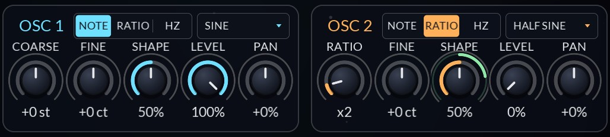
| Control | Range | Default | What it does |
|---|---|---|---|
| NOTE / RATIO / HZ | Pitch mode | Note (Osc 2, 3: Ratio) | Note follows the keyboard with an offset; Ratio runs at a multiple of the note, the classic FM way; Hz holds a fixed frequency whatever you play. |
| Wave | 15 waves | Saw (Osc 2, 3: Sine) | See the table below. |
| RAND / SYNC | Retrigger | Sync | SYNC starts each note's wave at its Phase; RAND at a random place, so no two notes start alike. |
| PITCH | ±48 st | 0 | Note mode: the offset in semitones. ROUTE |
| RATIO | ×0.25 – ×16 | ×1 (Osc 3: ×3) | Ratio mode (the knob reads RATIO): the multiple of the note. Routes move it by musical intervals. ROUTE |
| FREQ | 1 Hz – 10 kHz | 440 Hz | Hz mode (the knob reads FREQ): the fixed frequency. ROUTE |
| FINE | ±100 ct | 0 | Fine tune, in every mode. ROUTE |
| SHAPE | 0 – 100% | 50% | Pulse width for Square and Pulse; for the other waves (except Saw), a phase distortion that squeezes or stretches the first half of the cycle. 50% is the plain wave. ROUTE |
| LEVEL | 0 – 100% | 100% (Osc 2, 3: 0%) | How loud it is in the mix. An oscillator at 0 can still modulate others. ROUTE |
| PAN | ±100% | 0 | Its place in the voice's stereo image. ROUTE |
| FILTER | 1+2, F1, F2 | 1+2 | Which filter it goes into. See Routing in Chapter 09. |
Host parameters per oscillator: Sync (Osc 2 and 3 restart with Osc 1), Phase ROUTE, Bend (how much the pitch bend moves it, 100% by default) and Key Track (Off pitches it from middle C whatever you play).
| Wave | Character |
|---|---|
| Sine | Pure. The classic FM operator. |
| Triangle | Soft, odd harmonics. |
| Saw | Bright and full. Band-limited, so it stays clean high up and under FM. |
| Square, Pulse | Hollow to nasal. Shape sets the width: 10 to 90% for Square, 5 to 50% for Pulse. |
| Half Sine … Alt Camel | The Yamaha TX81Z's seven other waves: Half Sine, Abs Sine, Quarter, Alt Sine, Alt Half, Camel and Alt Camel. Sines with parts of the cycle cut, folded or doubled, which give FM a whole family of brighter, buzzier tones. |
| White, Pink | Noise, as an oscillator: it can be filtered, panned and even used as an FM source. |
| Random | A different one of Sine to Alt Camel for each note, so a run of notes changes colour as it goes. |
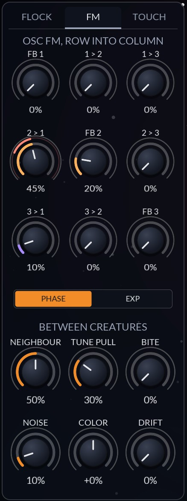
The FM tab draws what comes out of Osc 1, the oscillator you hear on its own, for a C4, with a chip for each FM cell that is turned up. The grid reads row into column: the knob in row 2, column 1 (2 > 1) is how much Osc 2 modulates Osc 1. The diagonal, FB 1 to FB 3, is each oscillator's feedback on itself. Each knob is squared inside, so the first half of its travel is gentle.
| Control | Range | Default | What it does |
|---|---|---|---|
| FB, 1 > 2 … 3 > 2 | 0 – 100% | 0% | The nine cells. ROUTE |
| PHASE / EXP | FM type | Phase | Phase is DX-style phase modulation, bright and stable in pitch. Exp moves the pitch itself, up to four octaves either way: growly, and it bends. |
| FLOCK FM | 0 – 100% | 0% | Neighbours' Osc 1 into this creature's Osc 2. ROUTE |
| TUNE PULL | 0 – 100% | 0% | Creatures flying the same way drift toward pure intervals. ROUTE |
| BITE | 0 – 100% | 0% | Ring mod while this part's hunters hold their prey. ROUTE |
| NOISE | 0 – 100% | 0% | The mixer's noise level. ROUTE |
| COLOR | ±100% | 0 | Pink (−100%) to white (+100%). ROUTE |
| DRIFT | 0 – 100% | 0% | Each creature's own slow wander in pitch, up to ±15 cents. ROUTE |
Within each sample the oscillators run 3, then 2, then 1. So the downward cells (3 > 2, 3 > 1 and 2 > 1) hear this sample's modulator, and the upward ones (1 > 2, 1 > 3, 2 > 3) hear the last sample's. In practice this means you can build any of the classic stacks: 3 > 2 > 1 as a three-operator stack heard on Osc 1, or 2 > 1 and 3 > 1 as two modulators on one carrier. Feedback averages its last two samples, as the DX7 did, so it brightens toward a saw and then a rasp rather than straight into noise.
BETWEEN CREATURES (Flock FM, Tune Pull and Bite) is explained in Chapter 11.
Two filters per voice, from a clean 48 dB low pass to a ringing comb, after a drive stage.
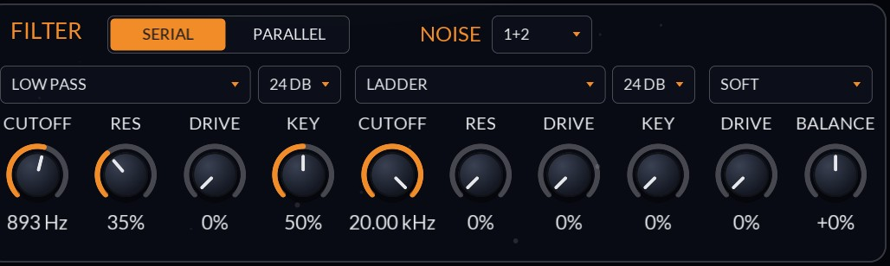
The graph draws both filters' response together, Filter 1 in orange and Filter 2 in purple. Drag a numbered handle across to set its cutoff and up or down for its resonance; the wheel sets its drive and a double-click resets it. In MAP mode, with a source armed, the drag sets that source's route to the cutoff instead.
While a note plays, the curves follow what the newest note's filters are really doing: its envelopes, LFOs, routes and key tracking all move them, and a faint line stays where the knobs alone would put them. The handles stay on the knobs' settings.
| Control | Range | Default | What it does |
|---|---|---|---|
| SERIAL / PARALLEL | Routing | Serial | See below. |
| NOISE INTO | 1+2, F1, F2 | 1+2 | Which filter the noise goes into. |
| Type | 8 types | Low Pass (F2: Ladder) | See the table below. |
| Slope | 12 – 48 dB | 24 dB | Low, high and band pass only. |
| CUTOFF | 20 Hz – 20 kHz | 1.26 kHz (F2: 20 kHz) | For a comb, its tuning. ROUTE |
| RES | 0 – 100% | 20% (F2: 0%) | Resonance; for a peak, its boost; for a comb, its feedback. ROUTE |
| DRIVE | 0 – 100% | 0% | Saturates the filter's own input. ROUTE |
| KEY | 0 – 100% | 0% | Key tracking: at 100% the cutoff moves an octave per octave, around middle C. ROUTE |
| Drive type | Soft, Hard, Tube | Soft | The drive before both filters. |
| PRE DRIVE | 0 – 100% | 0% | Up to 24 dB into the shape, with the level brought back down. ROUTE |
| BALANCE | ±100% | 0 | In Parallel, turns Filter 1 or Filter 2 down. ROUTE |
| Type | Sound |
|---|---|
| Low Pass | The workhorse: a state variable filter, cascaded for 12, 24, 36 or 48 dB per octave, with a resonance peak up to a whistle. |
| High Pass | The same, from the other side: thins and brightens. |
| Band Pass | Only a band around the cutoff. Narrower and more vocal with resonance. |
| Notch | Cuts a band out. Resonance narrows it. Slope is ignored. |
| Peak | Boosts a band. Resonance is the boost, up to five times. |
| Ladder | A four-pole transistor ladder: warm, thick, and it squelches and self-oscillates near full resonance. |
| Comb + | A short tuned delay with positive feedback: rings at every harmonic of the cutoff, like a plucked string or a tube. |
| Comb − | Negative feedback: rings at the odd harmonics, hollower, an octave lower. |
Each oscillator's FILTER, and the noise's, picks where it goes: F1, F2 or both (1+2, the default). In Serial, F1 and 1+2 go through both filters and F2 skips Filter 1. In Parallel, a source in one filter plays at full level with BALANCE at centre, and turning BALANCE the other way turns it down. A source in both crossfades: half into each at centre, all into one at either end.
Set Osc 1 to F1 and Osc 2 and 3 to F2, in Parallel, to filter a body and a bright layer apart: a low pass on one, a comb or high pass on the other.
The drive sits before the filters. Soft is a tanh curve, round and warm. Hard clips flat, buzzier. Tube is asymmetric, so it adds even harmonics. Its gain is compensated, so turning it up thickens and compresses the sound more than it makes it louder.
Three envelopes and four LFOs per voice, and four mod buses per part. Two of the LFOs move the creatures as well as the sound.
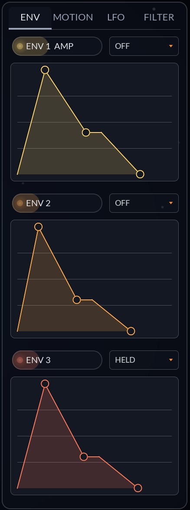
Each envelope is an ADSR or a SHAPE, picked in the box beside its chip. As an ADSR it draws its stages: drag the points to set attack, decay, sustain and release. A point moves with the mouse from where you grab it; hold Shift for fine moves. A dot rides the curve for every sounding note. The chip above each one is its source for MAP and lights as it moves.
ENV 1 AMP is the amp: it shapes every note's level, and it always releases when you let go. ENV 2 and ENV 3 are free to route; a new part starts with Env 2 opening Filter 1.
| Control | Range | Default | What it does |
|---|---|---|---|
| Attack | 0 ms – 20 s | 5 ms | ROUTE |
| Decay | 0 ms – 20 s | 400 ms (2, 3: 300 ms) | ROUTE |
| Sustain | 0 – 100% | 70% (2, 3: 30%) | ROUTE |
| Release | 0 ms – 20 s | 300 ms | ROUTE |
| Time Range | Short, Normal, Long | Normal | How much time the drawing spreads across its width: up to 1 s, 5 s or 20 s for each of attack, decay and release. Pick Short for plucks and drums, Long for pads and swells. It only changes the view: switching it never changes a time, and a time past the end waits there until you drag it back in. |
| Loop | Off, Held, Free | Off | Held repeats attack and decay while the note is held. Free keeps repeating after you let go too, until the note ends. |
VELOCITY on the VOICE tab under the sky (0 to 100%, 100% by default) is how much velocity sets ENV 1's level. At 0 every note plays at full level.
Host parameters per envelope: Delay and Hold (0 ms to 20 s) ROUTE, an Attack, Decay and Release Curve each (−1 to +1), and Velocity, how much velocity scales the whole envelope.
After XAOC's Zadar module, a SHAPE envelope plays one drawn contour instead of its stages: pick it from 60 shapes in ten banks, Rise, Fall, Swell, Pulse, Waves, Steps, Drift, Strike, ADSR and Acoustic, and it is stretched over its time. Click the shape box for a menu by bank, scroll over it, or use the arrows either side of the bank's name on the drawing to step through them (the name itself opens the menu). Long, slow shapes on a filter or a drawbar keep a held chord moving for minutes; a pulse or a step shape as ENV 1 turns each held note into a pattern of its own.
The drawing shows the shape as it plays, with its bank and how often it repeats in its corners and a dot for every sounding note. Drag it sideways to warp it in time and up or down to bend it in level (Shift for fine moves; double-click puts both back). In MAP mode, with a source armed, the same drag sets how far that source warps it (sideways) or bends it (up or down), and the shape as the source at its fullest would take it shows over it in the source's colour; right-click removes both routes.
Sustain point. The dashed line on the drawing is where the shape stops and holds while you hold the note, as on Zadar; let go and it plays on from there. Drag it in from the right edge (all the way back to the edge turns it off) and double-click it to turn it off. On ENV 1 the rest of the shape is the release: it plays out first, then the Release fade follows. The ADSR and Acoustic banks draw the classic stages, so a sustain point on their flat part makes an ADSR you can see.
Envelopes moving envelopes. Env 1, 2 and 3 are sources, and each envelope's Time, Warp, Bend, Level, Sustain Point and Chain Phase (and its ADSR stage times) are destinations, so one envelope can stretch, lean or bend another while it plays, or itself. Time is read as a rate, so a change speeds the shape up or slows it from where it is, never jumps it. Chain Phase is read when the chain hands over. The Interplay presets are built this way.
| Control | Range | Default | What it does |
|---|---|---|---|
| Time | 1 ms – 30 min | 2 s | How long one pass takes, with FREE lit. ROUTE |
| Length | 1/16 – 64 bars | 1 bar | With SYNC lit, one pass in the host's tempo instead. |
| Warp | −100 – +100% | 0% | Drag sideways: + pushes the shape later, − pulls it sooner. ROUTE |
| Bend | −100 – +100% | 0% | Drag up or down: + lifts the shape, − sinks it. ROUTE |
| Repeat | Once, 2x – 16x, Held, Forever | Once | How many passes it plays; after the last it holds where it ended. Held repeats while the note is held and finishes its pass after; Forever until the note ends. |
| LVL | 0 – 100% | 100% | The shape's height, as Zadar's level: it scales the whole contour down. ROUTE |
| Sustain | 0 – 100%, Off | Off | The dashed line: where the shape holds while the note is held. ROUTE |
| REV | Off, On | Off | Plays the shape backwards. The sustain point stays where it is from the start. |
| Retrigger | Smooth, Restart, Ignore | Smooth | What a new note does while it plays: Smooth picks the shape up where it passes the level it is at now, so it never jumps; Restart starts it from the top, gliding there in 5 ms so it never clicks; Ignore lets it play on. |
| REL / VEL | ENV 1's Release: when you let go it fades over this while the shape keeps moving under the fade (with a sustain point, after the rest of the shape has played). ENV 2 and ENV 3 show their Velocity, and play on after you let go. |
Chains. The box at the top right of the panel chains the envelopes in Shape mode, so one starts the next: 1 > 2, 2 > 3, 1 > 2 > 3, or the same as a Loop back to the first. The first starts with the note; each next one waits until the one before has played its phase (the box beside its Retrigger) of its whole run: 0% starts it with the one before, 100% when that one ends. In a loop the first starts again from the last the same way, so two arches that start each other halfway cross-fade forever. In a chain, Held and Forever play once, so the chain moves on. An ADSR envelope in a chain just starts with the note.
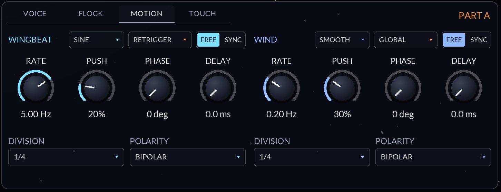
The MOTION tab holds the two LFOs that move the flock. They only move it: they aren't sources for routes. For a sound that moves with them, use LFO 1 or 2 at the same rate.
| Control | Range | Default | What it does |
|---|---|---|---|
| Shape | Sine, Triangle, Saw, Square, S&H, Smooth | Sine (Wind: Smooth) | S&H holds a random value per cycle; Smooth glides between random values. |
| Trigger | Retrigger, Free, Global | Retrigger (Wind: Global) | See below. |
| FREE / SYNC | Rate or tempo | Free | Sync follows the host's tempo at DIVISION; Free and Global also lock to its bar. |
| RATE | 0.02 – 50 Hz | 5 Hz (Wind: 0.2 Hz) | ROUTE |
| PUSH | 0 – 100% | 20% (Wind: 30%) | How hard it moves the creatures. ROUTE |
| PHASE | 0 – 360° | 0° | Where a retriggered cycle starts, or how far a synced one sits off the beat. ROUTE |
| DELAY | 0 ms – 20 s | 0 | Fades the LFO in after each note starts. ROUTE |
| DIVISION | 1/32 – 4/1 | 1/4 | With triplets and dotted values. |
| POLARITY | Bipolar, Unipolar | Bipolar | Bipolar swings both ways around the knob; unipolar only up from it. |
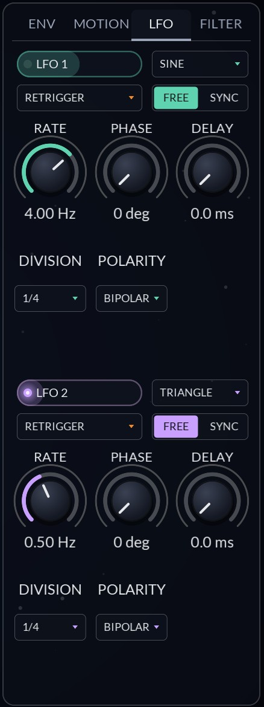
LFO 1 (4 Hz sine) and LFO 2 (0.5 Hz triangle) are plain LFOs that only modulate. The LFOS tab draws each one, with a dot running along it at its rate. They have the same controls as the MOTION LFOs, without Push.
With SYNC on, a Free or Global LFO is locked to your DAW's bar, not just its tempo: a 1/16 gate lands on the sixteenths wherever you start playback, and a looped bar plays the same S&H values every time round. PHASE shifts it against the beat. Retrigger starts it with each note instead, which suits notes played off the grid.
Route LFO 1 to the part's Fine at a few percent for vibrato, and set its DELAY so it arrives once the note has settled. Map Press onto that route's amount and the vibrato follows your finger.
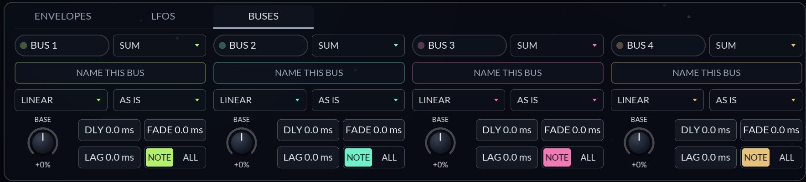
Each part has four mod buses. A bus takes any number of sources, mixes them into one value, shapes it, and hands it on as a source of its own: BUS 1 to BUS 4, with a chip on this tab. Build a mix once (say, Press times the mod wheel, faded in after two seconds) and route it to as many places as you like.
To feed a bus, touch a source in MAP and drag the bus's BASE knob, or pick the bus as a route's destination in the route list. To use it, touch its chip and drag any knob. A bus can feed another bus.
Click the box under a bus's chip to name it. The name shows on its chip, in the route list and in MAP's hint, and is saved with the song and in your presets. An empty name goes back to "Bus 1".
Route LFO 1 onto Bus 1 at 100%, set the bus's DLY to 2 s and FADE to 1 s, and route Bus 1 to Fine at a few percent. Any held note now grows vibrato after two seconds. Route Press onto Bus 1 as well with MODE on MULTIPLY, and your finger sets how deep it gets.
What boids are, how each species flies, and how the way a creature flies becomes how it sounds.
JSynth's creatures are boids, the flocking model Craig Reynolds published in 1986. No creature knows where the flock is going, and nothing steers the flock as a whole. Each creature looks only at its neighbours, the creatures of its own species within RANGE, and follows three rules:
Run those rules on every creature, 500 times a second, and shoals, swirls and murmurations come out of nothing. Nearer neighbours count more: a neighbour's pull fades smoothly to nothing at the edge of Range, and it counts for less while its own sound is fading, so a creature drifting in or out of the neighbourhood never jolts the others. JSynth adds forces of its own on top of the three rules: your note's lure, each creature's wander, the wind and the wingbeat, the walls, and a behaviour that decides how each species treats the other.
Each part is a species, and every sounding voice is one creature of it. A creature flocks only with its own kind; the other species matters only when one of them hunts or flees.
500 times a second, each creature adds up these pulls, turns toward the sum, and moves. Its speed always stays between a fifth of its top speed and the top speed itself.
| Force | What it does | Set by |
|---|---|---|
| Cohesion | Toward the middle of its neighbours (away from it on Scatter). | COHESION, RANGE |
| Alignment | Toward its neighbours' average heading and speed. | ALIGN, RANGE |
| Separation | Away from any neighbour inside 40% of Range, harder the closer it is. | SEPARATE, RANGE |
| Lure | While the note is held, toward a point that roams around the lure on a leash: loose near it, firm when the creature strays. | LURE, WANDER, LURE X/Y |
| Wander | A heading of its own that drifts, so it sometimes sweeps a long curve and sometimes jinks. | WANDER |
| Hunt, flee | A hunter chases the nearest creature of the other species; prey shies from hunters; a fleeing species runs from the other. | Behaviour |
| Wind | One gust pushing every creature of the species the same way, from a direction that turns slowly. | WIND (MOTION tab) |
| Wingbeat | Bobs each creature side to side across its path. | WINGBEAT (MOTION tab) |
| Walls | Turns creatures back at the sky's edges, or carries them round. | WALLS |
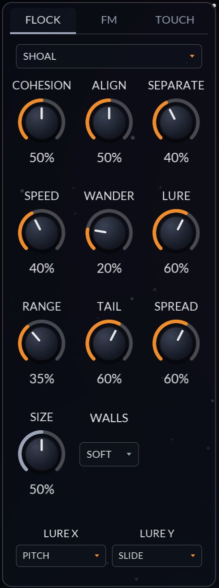
| Control | Range | Default | What it does |
|---|---|---|---|
| Behaviour | Shoal, Scatter, Hunt, Flee | Shoal (B: Hunt) | How this species treats its own kind and the other. See Behaviours below. |
| COHESION | 0 – 100% | 50% | Rule 1: how hard each creature steers toward the middle of its neighbours. ROUTE |
| ALIGN | 0 – 100% | 50% | Rule 2: how hard each creature matches its neighbours' heading and speed. ROUTE |
| SEPARATE | 0 – 100% | 40% | Rule 3: how hard each creature steers away from a neighbour inside 40% of Range. ROUTE |
| SPEED | 0 – 100% | 40% (B: 55%) | Top speed. Press raises it further, up to 80% more. ROUTE |
| WANDER | 0 – 100% | 20% | Each creature's restlessness, and how far it roams around its lure. ROUTE |
| LURE | 0 – 100% | 60% | How hard a held note pulls its creature. Low lets the flock take over. ROUTE |
| RANGE | 0 – 100% | 35% | How near counts as a neighbour: 8% to 40% of the sky's height at the default Size. ROUTE |
| TAIL | 0 – 100% | 50% | How long the ink lasts, about half a second to five seconds. ROUTE |
| SPREAD | 0 – 100% | 50% | How far the ink blooms as it ages. ROUTE |
| SIZE | 0 – 100% | 50% | How big the sky is. A bigger sky makes creatures, their Range and their speed relatively smaller, so flocks spread out. Shared. |
| WALLS | Soft, Wrap, Open | Soft | Soft turns creatures back near the edge; Wrap carries them round to the other side; Open lets them fly well past it first. Shared. |
| LURE X, LURE Y | Pitch, Velocity, Press, Slide, Release, Random, Centre | Pitch, Slide | What places a note's lure along each axis. |
Behaviour only matters between species, so it needs both parts playing: play mode LAYER, or any mode that sends notes to both. A new instance starts with A on Shoal and B on Hunt.
A held note pulls its creature toward a point that roams slowly around the lure, on a leash: loose near the lure, so the flock and the wander shape the path there, and firm when the creature strays. Each creature roams on its own two slow orbits, so no two trace the same path. LURE X and LURE Y choose what places the lure: by default low notes sit left and high notes right (Pitch, over four octaves from C2, and bend moves it), and more Slide sits higher. Try Lure Y on Press to make pressing harder send creatures upward, or Lure X on Random to scatter a chord across the sky. A lure follows its note as it plays, so sliding or pressing moves it live.
The flock changes nothing in the sound by itself, so a plain patch is plain however it flies. It gets in three ways, and only these:
So the flock's knobs shape the sound through those. This is what each one does to what you hear:
| Turn up | The creatures | What you hear |
|---|---|---|
| COHESION | Bunch together. | Nearest climbs and more creatures are in each other's range, so Flock FM rings harder and Tune Pull has more to pull toward. With X Pan, the stereo image narrows. |
| ALIGN | Fly as one, turning together. | Heading and Turn move together across a chord, so routes from them move every note alike. Tune Pull engages, since it only pulls creatures heading the same way. |
| SEPARATE | Keep their distance. | Nearest stays lower and steadier, and Flock FM gentler. |
| SPEED | Fly faster. | Every source moves faster: neighbours come and go sooner and X Pan sweeps quicker. The Speed source itself is measured against the top speed at full Press, so a creature you don't press stays below about 55%, and pressing fills it. |
| WANDER | Drift, jink and roam wider. | Turn gets busy and Heading wanders, so routes from them get livelier; the flock holds together less. |
| LURE | Stay where you play. | Each creature's place follows its note, so X Pan follows Lure X (by default the pitch, low left and high right). Turn it down and the flock carries creatures off. |
| RANGE | See farther. | The three rules, Nearest, Flock FM and Tune Pull all reach farther, so creatures hear each other from further apart. |
| SIZE | Spread out in a bigger sky. | Fewer neighbours, lower Nearest, slower sweeps. Shared by both species. |
| Behaviour | Shoal, scatter, chase or flee. | Shoal gives a high, steady Nearest; Scatter a low one and a clean sound; Hunt and Flee give sudden bursts of Speed and Turn, and Hunt drives Bite. |
| WALLS | Turn back at the edge, or wrap round. | With Wrap, a creature leaving one side reappears at the other, so X Pan jumps across the stereo field. Soft and Open sweep it back. |
| TAIL, SPREAD | Leave longer, wider ink. | Nothing. Ink is only drawn. |
Every flock knob but Size can take routes, and a route moves each creature by its own note. A new part already routes Press onto Speed, so the note you lean on flies faster. Try Press onto SEPARATE and the note you press breaks formation while the rest hold together; Velocity onto WANDER and hard-struck notes fly wild; an envelope onto LURE and each creature is held at its place as the note starts, then let loose into the flock. Behaviour, Lure X and Lure Y, Size and Walls can't be routed.
The MOTION tab's two LFOs (Chapter 10) move only the flock. The wingbeat shows a little in Turn, and the wind in Speed and Heading, so route those to hear them.
Three knobs on the FM tab connect the flock to the sound directly. All start at 0, so the flock changes nothing until you ask it to.
Load Init, set OSC 2's LEVEL to half, FLOCK FM to 60% and LURE to 20% so the flock can take over, and hold a four-note chord across two octaves. Turn COHESION to 100% and the others to 0: the creatures pile together and the chord rings. Swap to SEPARATE at 100%: they push apart and it goes clean. Then ALIGN alone: they stream off together, and with TUNE PULL up the chord slides into just intonation as they line up.
Every creature leaves ink behind it in the sky, more the brighter it is. The ink fades with TAIL and spreads with SPREAD, and creatures flying through it stir it. How it looks depends on the sky's look and palette (Chapter 6). It is only drawn: it doesn't change the sound.
Five dimensions of every note, each shaped and smoothed, each a source.
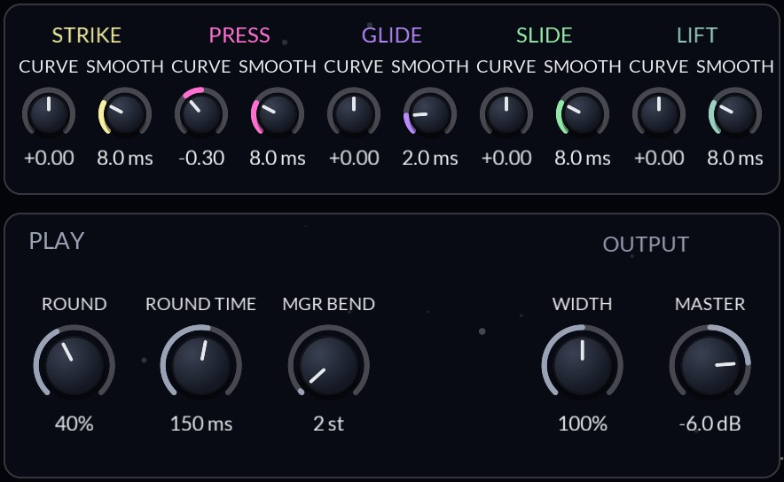
| Touch | Where it comes from |
|---|---|
| VELOCITY | How hard the note was struck: its velocity. |
| PRESS | Pressure: MPE channel pressure or the CLAP pressure expression. It also makes the creature faster and brighter. |
| GLIDE | The finger's bend, as −100% to +100% of the bend range. |
| SLIDE | Up and down the key: MPE CC 74 or the CLAP brightness expression. |
| RELEASE | How fast the note was released: its release velocity, 0 while the note is held. Route it to the amp envelope's release, say, so a quick lift cuts the note short. |
Each has a CURVE (−1 to +1): positive bows it up, so it responds more early in the travel, and negative bows it down. And a SMOOTH time (8 ms by default, 2 ms for Glide so slides track the finger), which irons out a controller's steps.
Under them, the rest of how you play. The whole tab is shared by both parts.
| Control | Range | Default | What it does |
|---|---|---|---|
| ROUND | 0 – 100% | 0% | Glide Rounding: once a finger stops sliding, pull its pitch toward the nearest semitone, by this much. While the finger moves, the pitch follows it exactly. |
| ROUND TIME | 0 ms – 20 s | 150 ms | How long that pull takes. |
| MGR BEND | 1 – 96 st | 2 st | The bend range of the MPE manager channel (channel 1), which bends every note. |
The five chips in the header light as you play, showing the newest note of the part you are editing. In MAP mode they are sources like any other: touch PRESS and drag a knob to make pressure move it.
Velocity comes from any keyboard. A plain keyboard's channel pressure is Press for every note, and its pitch wheel bends every note by MGR BEND. In the sky, a click sets Slide by how high you click and dragging bends.
There is no matrix page. Touch a source, drag a knob.
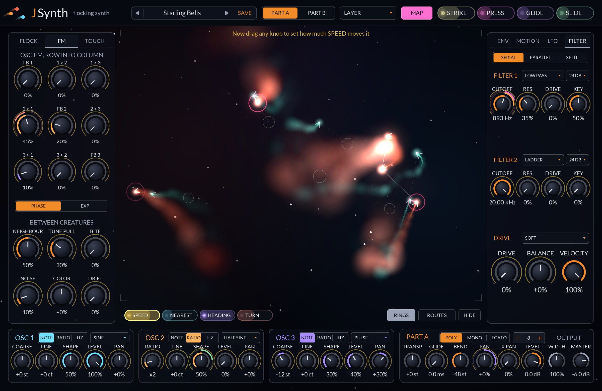
| In MAP mode, with a source armed | On a knob |
|---|---|
| Drag | Set that source's amount on this knob. A route dragged back to 0 is removed. |
| Double-click | Flip the route's sign. |
| Right-click | Remove the route. With no source armed, removes every route to that knob. |
The value boxes (an envelope's TIME, REL, VEL and phase) take routes the same way: drag up or down, and a bar along the box's foot shows how far the source moves it. A Shape envelope's drawing takes a sideways drag as a route onto its Warp and an up-or-down one onto its Bend.
Only the armed source's rings show; touch another source to see its routes. Nearly every knob on a part's panels can take routes: the flock's knobs, the FM grid, the envelopes and LFOs, the filters and the oscillators. The exceptions are Transpose, the part's Bend range, Velocity, and the shared ones: Size, Width, Master and the TOUCH tab.
| Source | Value |
|---|---|
| Env 1, 2, 3 | 0 to 100%, each note's own. |
| LFO 1, 2 | −100% to +100% (or 0 to 100% when Unipolar). Per note unless Global. |
| Velocity, Press, Slide | 0 to 100%, each note's own. |
| Release | The note's release velocity, 0 to 100%: 0 while it is held. |
| Glide | −100% to +100%: the note's bend. |
| Key | The note: −100% four octaves below middle C, 0 at middle C, +100% four octaves above. |
| Speed, Nearest, Heading | The flock's own, 0 to 100% (Chapter 6). |
| Turn | The flock's turning, −100% (left) to +100% (right) (Chapter 6). |
| Random | A new value per note, −100% to +100%. |
| Mod Wheel | CC 1 on channel 1. |
| Macro 1 to 4 | Four host parameters, for automation or a controller. |
| Bus 1 to 4 | The part's mod buses, −100% to +100%, by their own names (Chapter 10). |
Key, Mod Wheel and the macros have no chip on the panel; choose them in the route list. Random's chip is under the sky with the flock's.
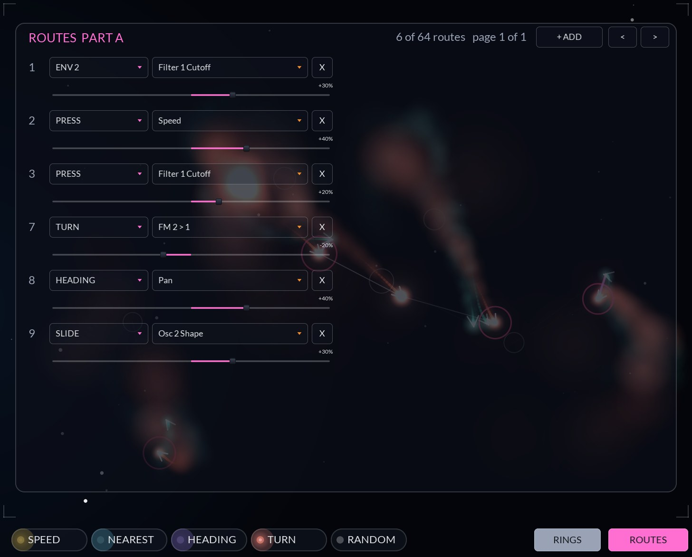
ROUTES under the sky opens, over the sky, the list of the part's routes in use, sixteen to a page. Each row has the source, the destination and the amount; change any of them here. + ADD starts a new route (Env 2 onto Filter 1 Cutoff, at 0) to edit, and X removes one. The arrows turn the pages. Each part has 64 routes; the list shows how many are used.
The list reaches what MAP can't: sources without a chip, and destinations with no knob on the panel, such as an oscillator's Phase, an envelope's Delay and Hold, and every route's own amount.
A route's amount is itself a destination. Route Press onto the amount of a route from LFO 1 to Fine, and the vibrato deepens as you press. Routes onto amounts are worked out first, so they always take effect on the same tick.
A route moves a parameter within its own range: +100% from a source at full moves a knob from its lowest setting to its highest, and +10% moves it a tenth of the way. Routes add together, and the result stops at the knob's ends. Ratio moves by musical intervals, so a small route onto Ratio detunes evenly at every setting.
One hundred and sixty-six sounds in ten categories: a few plain patches by instrument family first, then the showcases: the flock playing the sound, Press shaped by the mod buses, patches played with pressure, drones and textures on Shape envelopes, patches that move on their own, envelopes that move each other, landscapes on both parts, and variations on MicroMonsta 2 programs.
The preset bar works like JVerb's: the arrows step through the presets, scrolling over the bar does too, and clicking the name opens the menu by category. SAVE saves the current sound under a name of your own. The star beside the name makes the current preset a favorite, and Favorites at the top of the menu lists every starred one, so the sounds you reach for are one click away. A factory preset sets every parameter it doesn't mention to its default, so nothing from the last sound (a route, say) carries over. Essentials comes first, a few plain patches to start from; the rest are showcases. Most answer the mod wheel and Press. Every preset is level-matched, so stepping through the bank doesn't jump.
User presets are small text files ending .jspreset, saved in:
| macOS | ~/Library/Application Support/JSynth/Presets |
| Windows | %APPDATA%\JSynth\Presets |
| Linux | ~/.config/JSynth/Presets (or $XDG_CONFIG_HOME/JSynth/Presets) |
Copy them between machines freely. A preset from a newer JSynth loads in an older one with any parameters it doesn't know skipped.
Favorites are kept in Favorites.txt, one preset name per line, in the folder above Presets. Every JSynth you open shares them, and they last between sessions.
Starting points that show off what the flock can do. Each starts from Init unless it says otherwise.
Two sines, a 1:1 pair for the body and a ×14 for the bark.
Neighbours modulate each other, so a held chord shimmers as it gathers and breaks.
Two species; every catch rings, and the prey's filter opens as its own kind closes in.
The sound leans as each creature banks.
A strong gust pushes the flock while LFO 2 sweeps the filter.
Vibrato only where you press, arriving after the note settles.
The flock spreads a pad across the speakers as it turns.
A pitch drop that goes further the harder you hit.
Every parameter JSynth exposes to the host. Part parameters exist once for each part, named "A …" and "B …" in the host.
| Format | CLAP 1.2 instrument. Features: instrument, synthesizer, stereo. |
| Ports | One note input (CLAP, MIDI and MIDI MPE; CLAP preferred). Three stereo outputs: Main, Part A, Part B. |
| Platforms | macOS universal (10.15+ Intel, 11+ Apple Silicon), Windows (64-bit), Linux (64-bit). |
| Latency | None. |
| Parts | Two, each a complete patch and a species in the flock. |
| Voices | Up to 16 per part (40 slots in all, so stolen notes fade out in 3 ms). Mono and Legato with a note stack. |
| Oscillators | 3 per voice, 15 waves (Random among them), double-precision phase. Saw, square and pulse band-limited by polyBLEP. |
| FM | 3 × 3 grid including feedback; phase or exponential. Plus Neighbour FM from up to three neighbours. |
| Filters | 2 per voice: TPT state variable (12–48 dB), notch, peak, 4-pole ZDF ladder, comb ±. Serial or parallel, each oscillator and the noise picking its filter. |
| Modulation | 3 envelopes, each a DAHDSR with curves and loop or a Shape (60 contours, 1 ms to 30 min, chainable); 4 LFOs (2 move the flock); 4 mod buses; 5 touch dimensions, 4 flock sources, key, random, mod wheel, 4 macros. 64 routes per part. |
| Oversampling | 1×, 2× (default) or 4×, decimated by polyphase IIR half-bands. |
| Control rate | Every 32 samples, ramped per sample. The flock steps at 500 Hz. Renders are identical at any buffer size. |
| Parameters | All automatable except the route sources, destinations and Quality. Continuous ones accept CLAP modulation; route destinations accept it per note (note id, key, channel or port). |
| State | Saved with the host project, including the preset name. States from older and newer builds load, with unknown parameters skipped and missing ones at their defaults. |
| Panel | 1648 × 940 at 100%; 75%, 100%, 125%, 150% and 200%. |
| Threading | The audio thread never allocates, locks or waits on the panel after activation. |
| Symptom | What to check |
|---|---|
| JSynth doesn't appear in my host (macOS) | The download is probably quarantined. See the warning in Chapter 2, then rescan plug-ins. |
| Only part A plays | The play mode is SINGLE. Choose LAYER or another mode in the header. Check each part's Key Low and Key High too. |
| Turning up the flock knobs changes nothing in the sound | By design: the flock only reaches the sound through routes and the three BETWEEN CREATURES knobs. Map a flock source, or raise FLOCK FM. |
| FLOCK FM makes no difference | It modulates Osc 2. Give Osc 2 some LEVEL, or route it into Osc 1 with 2 > 1. Creatures also have to be near each other: raise RANGE or COHESION, and play more than one note. |
| BITE does nothing | Bite is set on the hunting part, and needs the hunter's Osc 1 and a prey of the other species: play mode LAYER (or any mode that plays both), one part on Hunt. |
| Notes are out of tune | Check TUNE PULL (just intervals are up to 30 cents from equal temperament), DRIFT, and a route onto Fine or Ratio. An MPE controller sends bend per note at the part's BEND range, which must match the controller's (48 semitones is the MPE standard). |
| Pitch bend is far too wide on a plain keyboard | A plain keyboard is on channel 1, which bends by MGR BEND (2 semitones). If its notes come on other channels, they are taken as MPE member channels and bend by BEND. |
| Notes cut off when I play a lot | The part is at its polyphony and the oldest notes are being taken. Raise the voices count on the VOICE tab (up to 16). |
| My user presets are missing | Check the preset folder for your OS (Chapter 14). Files must end in .jspreset. |